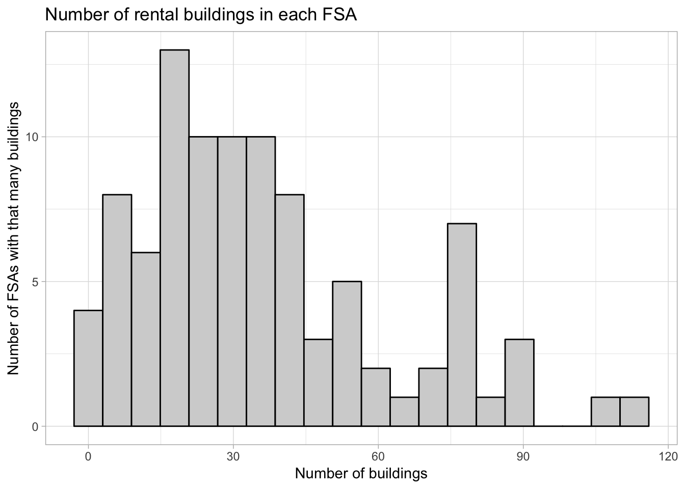
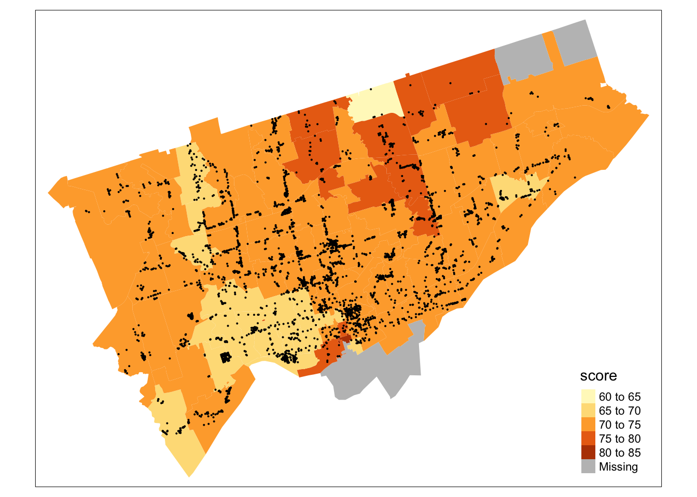
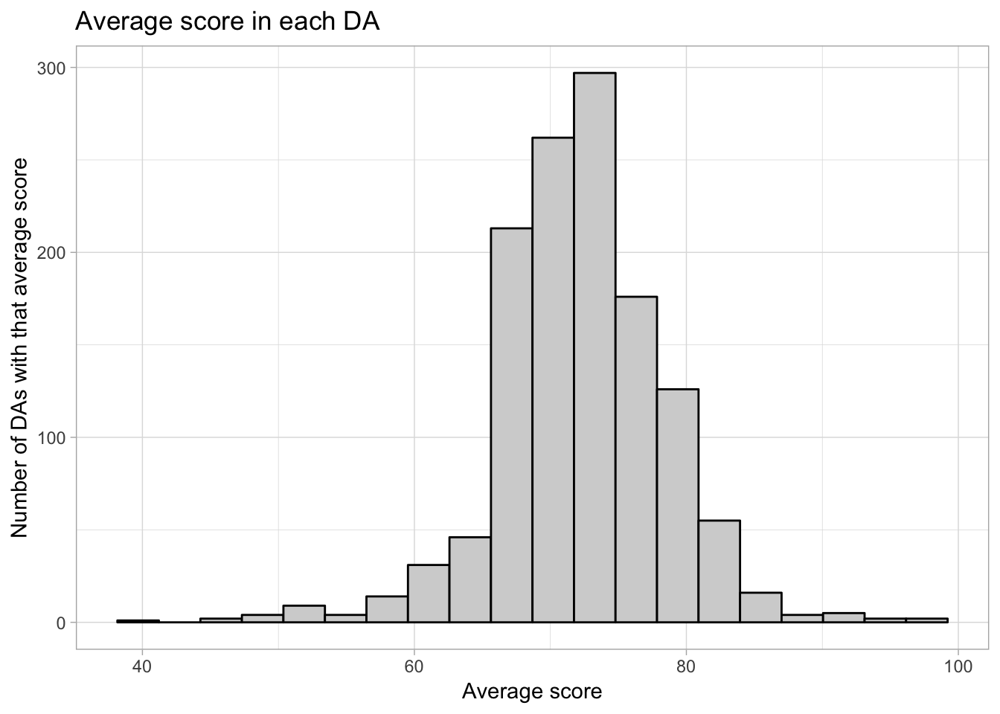
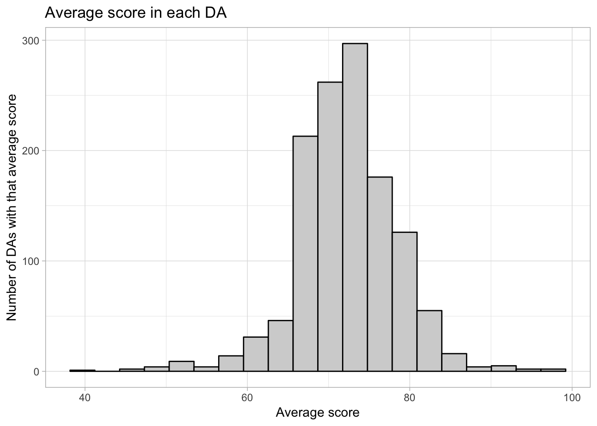
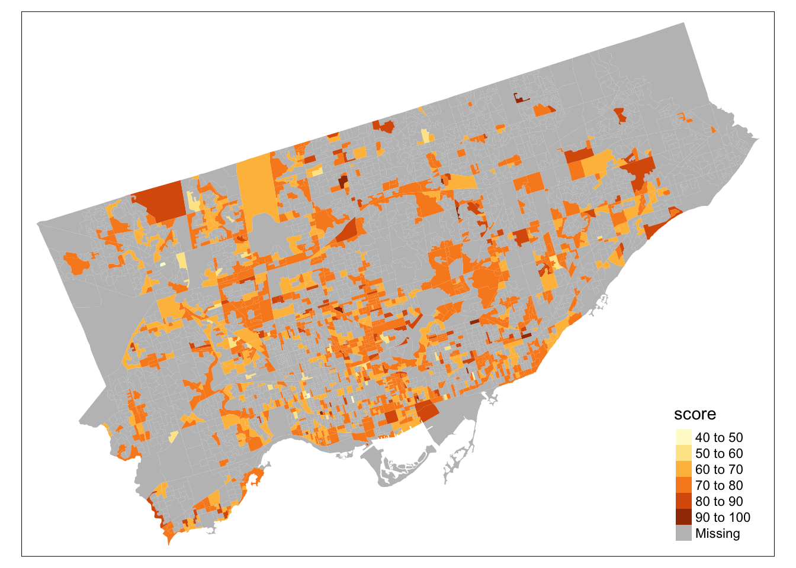

Chapter 3 Error
3.1 Introduction
In this chapter we will more formally discuss the notion of error. We will learn how to identify potential sources of error in an analysis, and for certain types of error, how to quantify them.
There are many different potential sources of error when analyzing data. A very limited list of examples:
Human error. You may make a mistake somewhere in your code. You could join tables incorrectly, exclude/include data you didn’t mean to, compute a summary or fit a model incorrectly.
Statistical error. The data you have is subject to uncertainty and variability. In a survey or scientific experiment, your data may be subject to sampling variability, which is the notion that if you repeated your data collection again under identical circumstances, you’d get different data. In cases where such hypothetical repeated sampling doesn’t make sense—for example when studying phenomena like air pollution or temperature, which occur once at each given place and time—your data is still not perfectly measured and you may be uncertain that it is fully capturing the underlying truth.
Communication error. You might have perfect data and a perfect analysis, and then communicate the results incorrectly. Or, your analysis and data might not be answering the question you intended.
In this chapter we will primarily focus on statistical error, because this is the type of error that, in statistical sciences, we are usually able to quantify.
3.2 Which wards have the highest/lowest quality rental housing?
library(tmap) # For maps!
# Read in the pre-cleaned apartment data with postal codes
apartmentpostal <- readRDS("./data/apartment-data/apartment-postal-merged.rds")
# Render it as an appropriate spatial datatype
apartmentpoints <- SpatialPointsDataFrame(
coords = apartmentpostal[ ,c("lon","lat")],
data = apartmentpostal,
proj4string = CRS(proj4string(torontoct))
)library(tmap) # Better map plotting software.
# Load the shape file.
# This is a spatial data format that tells us where to draw polygons
# You don't have to know about it for this course (won't be tested).
canadashape <- rgdal::readOGR( # FSA- 3 digit postal code
"/Users/alexstringer/teaching/w20/STA238/materials/book/data/shape-files/canada-fsa/gfsa000a11a_e.shp"
)## OGR data source with driver: ESRI Shapefile
## Source: "/Users/alexstringer/teaching/w20/STA238/materials/book/data/shape-files/canada-fsa/gfsa000a11a_e.shp", layer: "gfsa000a11a_e"
## with 1621 features
## It has 3 fieldscanadact <- rgdal::readOGR( # Census tracts
"/Users/alexstringer/teaching/w20/STA238/materials/book/data/shape-files/canada-ct/gct_000b11a_e.shp"
)## OGR data source with driver: ESRI Shapefile
## Source: "/Users/alexstringer/teaching/w20/STA238/materials/book/data/shape-files/canada-ct/gct_000b11a_e.shp", layer: "gct_000b11a_e"
## with 5452 features
## It has 8 fieldscanadada <- rgdal::readOGR( # Dissemination areas
"/Users/alexstringer/teaching/w20/STA238/materials/book/data/shape-files/canada-da/gda_000b11a_e.shp"
)## OGR data source with driver: ESRI Shapefile
## Source: "/Users/alexstringer/teaching/w20/STA238/materials/book/data/shape-files/canada-da/gda_000b11a_e.shp", layer: "gda_000b11a_e"
## with 56204 features
## It has 21 fields# Filter out only toronto postals.
# Can't use the filter() function on a spatial dataframe.
# Subset manually. Use a 'regular expression', common knowledge among CS folks
# but maybe not so much among statisticians?
# Toronto postals start with "M". "^[A-Z]" is a regular expression which
# matches any string that starts with "M".
torontoshape <- subset(canadashape,
stringr::str_extract(canadashape@data$CFSAUID,"^[A-Z]") == "M")
torontoct <- subset(canadact,
stringr::str_detect(canadact@data$CMANAME,"Toronto"))
torontoda <- subset(canadada,
stringr::str_detect(canadada@data$CDNAME,"Toronto"))
# Summarize the apartment scores by FSA (first 3 digits of postal).
# Another clever (?) use of regular expressions.
apartmentsummaryfsa <- apartmentpostal %>%
mutate(fsa = stringr::str_extract(postal,"M[0-9][A-Z]")) %>% # Extracts the first three digits of the postal of the form MNX where N is a number and X is any letter.
group_by(fsa) %>%
summarize(score = mean(score),numapartments = n())
glimpse(apartmentsummaryfsa)## Observations: 95
## Variables: 3
## $ fsa <chr> NA, "M1B", "M1C", "M1E", "M1G", "M1H", "M1J", "M1K…
## $ score <dbl> 72.50000, 74.29167, 74.00000, 70.71875, 70.64286, …
## $ numapartments <int> 12, 24, 1, 32, 28, 15, 37, 78, 44, 17, 53, 36, 43,…# How big are the FSA's?
apartmentsummaryfsa %>%
ggplot(aes(x = numapartments)) +
theme_light() +
geom_histogram(bins = 20,colour = "black",fill = "lightgrey") +
labs(title = "Number of rental buildings in each FSA",
x = "Number of buildings",
y = "Number of FSAs with that many buildings")
# What does the distribution of average score in an FSA look like?
apartmentsummaryfsa %>%
ggplot(aes(x = score)) +
theme_light() +
geom_histogram(bins = 20,colour = "black",fill = "lightgrey") +
labs(title = "Average score in each FSA",
x = "Average score",
y = "Number of FSAs with that average score")
# Map of toronto coloured by average score
# Merge the shape data with the apartment data
toronto_apartments_avgscore <- sp::merge(
torontoshape,
apartmentsummaryfsa,
by.x = "CFSAUID",
by.y = "fsa"
)
tmap_mode("plot")## tmap mode set to plotting
library(sp)
# Summary by Census Tract
# Find out which CT each apartment building is in
torontoapartmentsct <- sp::over(apartmentpoints,torontoct)
# Add it back on to the apartments data
apartmentpostal_withct <- apartmentpostal
apartmentpostal_withct$ct <- torontoapartmentsct$CTUID
apartmentsummaryct <- apartmentpostal_withct %>%
group_by(ct) %>%
summarize(score = mean(score),numapartments = n())
# How big are the Census Tracts?
apartmentsummaryct %>%
ggplot(aes(x = numapartments)) +
theme_light() +
geom_histogram(bins = 20,colour = "black",fill = "lightgrey") +
labs(title = "Number of rental buildings in each CT",
x = "Number of buildings",
y = "Number of CTs with that many buildings")
# What does the distribution of average score in an FSA look like?
apartmentsummaryct %>%
ggplot(aes(x = score)) +
theme_light() +
geom_histogram(bins = 20,colour = "black",fill = "lightgrey") +
labs(title = "Average score in each CT",
x = "Average score",
y = "Number of CTs with that average score")
toronto_apartments_avgscore_ct <- sp::merge(
torontoct,
apartmentsummaryct,
by.x = "CTUID",
by.y = "ct"
)
toronto_apartments_avgscore_ct@bbox <- toronto_apartments_avgscore@bbox
tmap_mode("plot")## tmap mode set to plotting
The reason the map has grey is because I filtered based on the Toronto “Census Metropolitan Area” (CMA), which includes the suburbs (a bunch of “L” postal codes). When you replicate this for the Dissemination Areas, you won’t have this grey, because they use the Toronto “Census Division”, which is what we commonly think of as being “Toronto”. Census data is confusing!
Exercise: reproduce the following analysis.
 

## tmap mode set to plotting